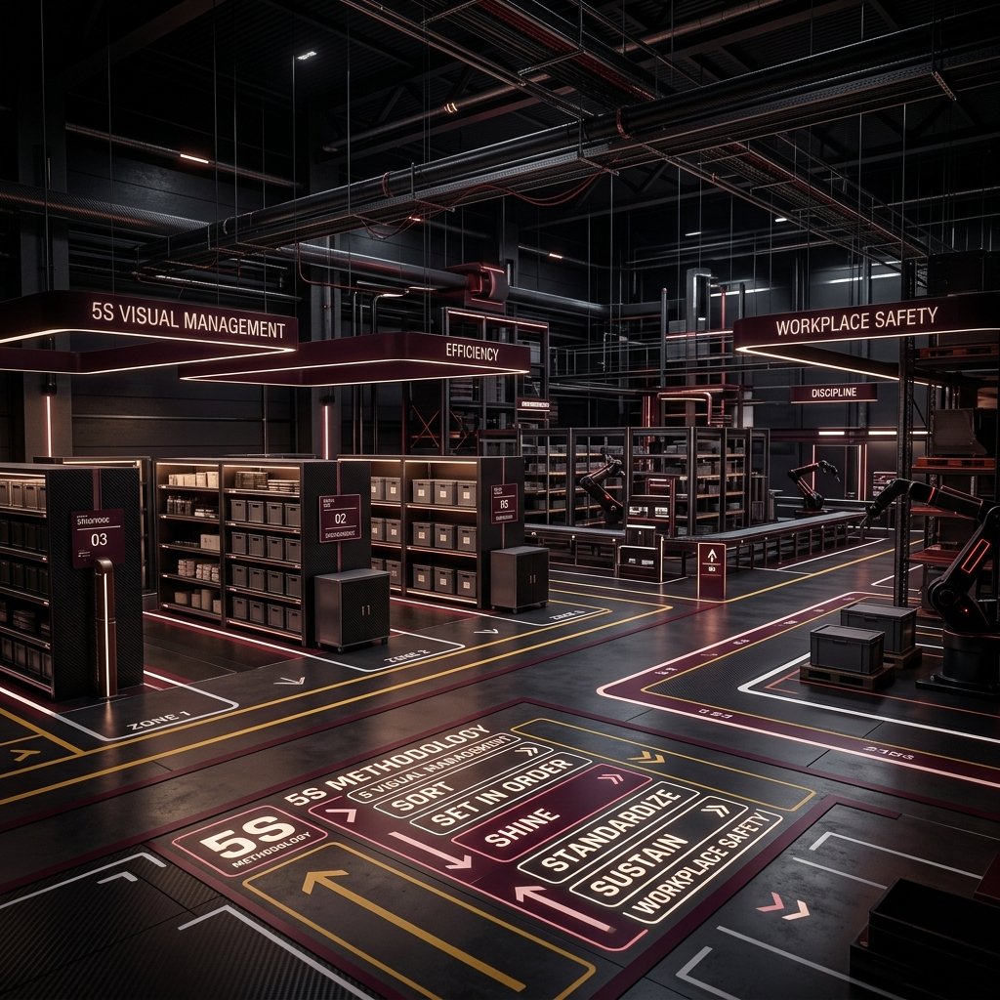
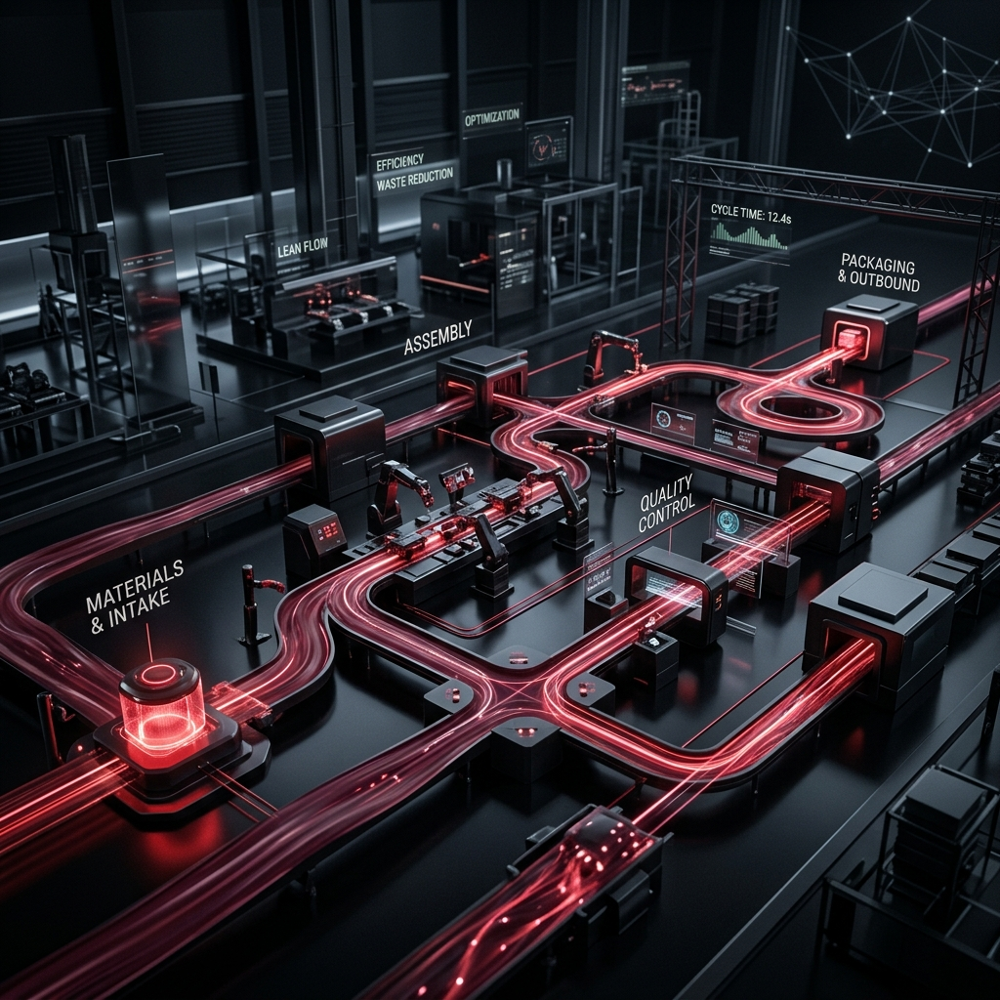
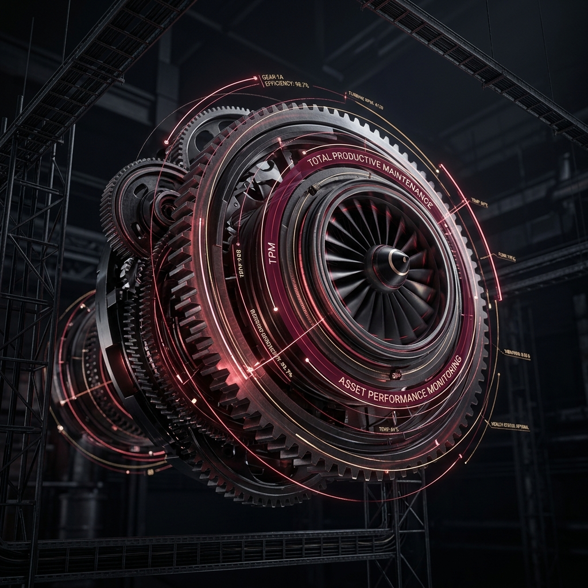

Organisational restructuring, transformation advisory, process redesign, and systems improvement designed to make operational excellence sustainable.
True business transformation requires dismantling inefficiencies and building robust, scalable processes. We help organisations shift from reactive problem-solving to proactive operational excellence.
Our approach integrates Lean methodologies, Six Sigma rigor, and TQM principles to eliminate waste, reduce variance, and align your workforce with strategic objectives.
Sustainable transformation is rarely achieved through a single initiative. We combine structured improvement methodologies to strengthen the way people, processes, and systems work together.

We establish organised, safe, and visually controlled workplaces where standards are easy to understand and deviations are easier to identify.

We examine how value moves through the organisation, identifying unnecessary activity, bottlenecks, and sources of delay.

A structured, data-driven approach to understanding process variation, identifying root causes, and improving consistency.

We help build a culture where quality is not treated as the responsibility of a single department, but as a shared operating principle.

We focus on improving equipment effectiveness through structured maintenance practices and operator involvement.